Agua Blanca Sur, El Progreso, Yoro
Instituto Gubernamental Polivalente "Roberto Micheletti Baín"
Formación básica, técnica y de bachillerato para estudiantes que desean prepararse con disciplina, conocimiento práctico y compromiso con su comunidad.
Identidad institucional
Un centro público con formación polivalente
El instituto combina aprendizaje académico con orientación técnica para que cada estudiante encuentre una ruta de crecimiento acorde a sus habilidades, intereses y metas familiares.
Oferta institucional
Educación para distintas etapas
El instituto ofrece III Ciclo de Educación Básica, III Ciclo con orientación técnica y bachilleratos para continuar la formación académica y profesional.


III Ciclo de Educación Básica
Formación para estudiantes de séptimo, octavo y noveno grado en modalidad básica.
Ver nivel
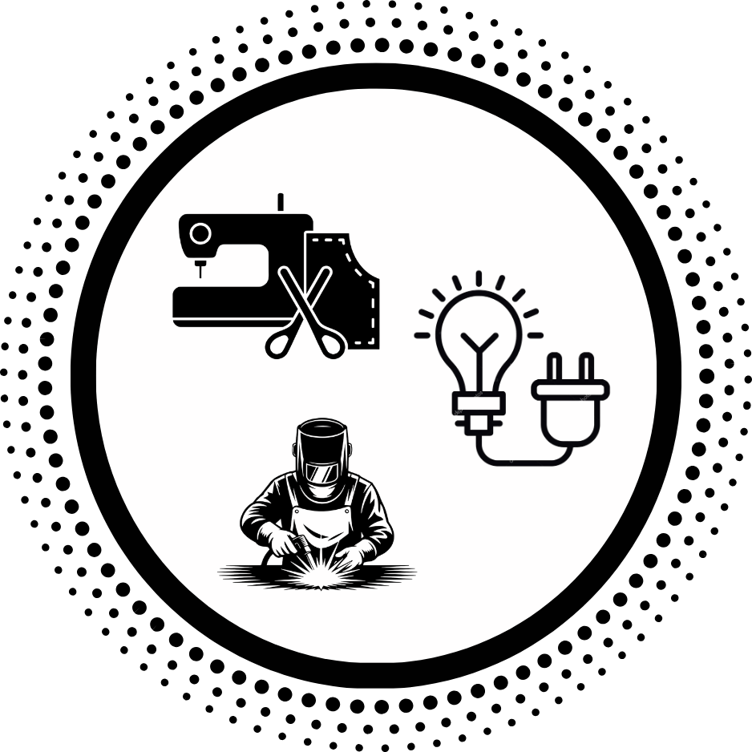
III Ciclo con Orientación Técnica
Estructuras Metálicas, Electricidad y Corte y Confección desde séptimo a noveno grado.
Ver talleres
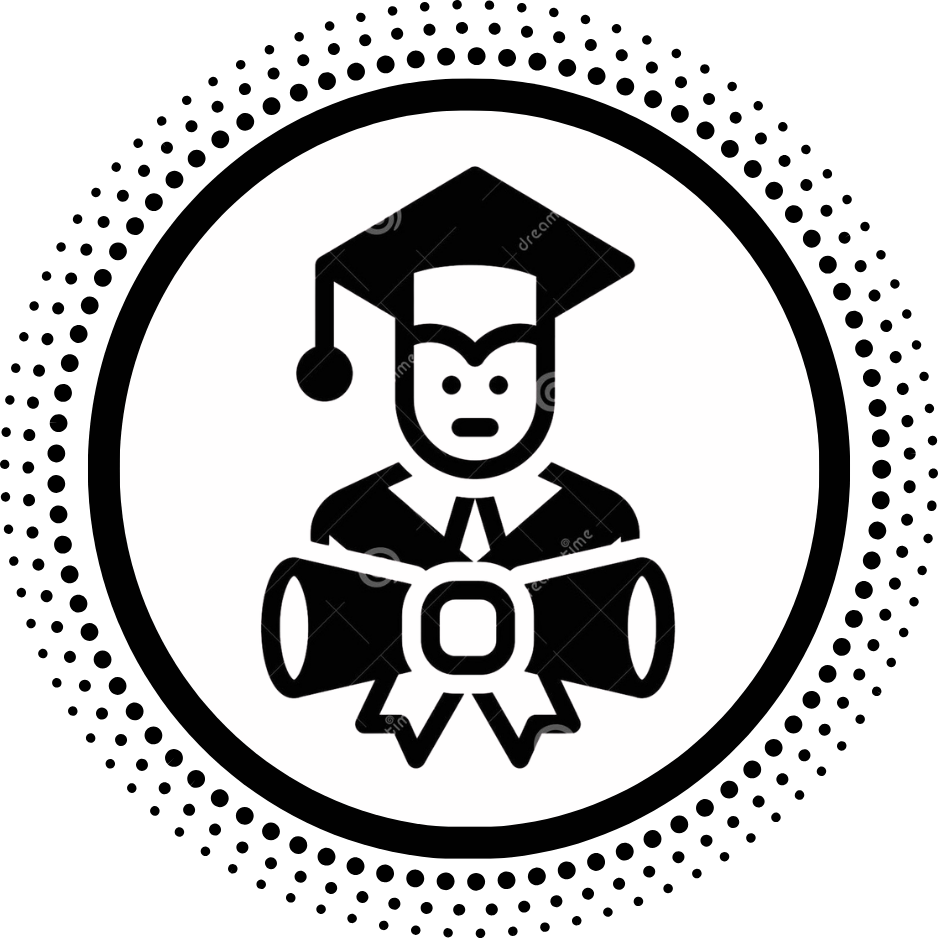
Bachilleratos
Informática, Contaduría y Finanzas, y Ciencias y Humanidades.
Ver bachilleratosCarrera destacada
BTP en Informática
El área de Informática es la que más actividad genera en el instituto: proyectos de laboratorio, prácticas de soporte técnico y la Feria de Inteligencia Artificial, donde los estudiantes exponen su trabajo ante toda la comunidad educativa.
Ofimática
Programación
Sistemas Operativos
Análisis y Diseño
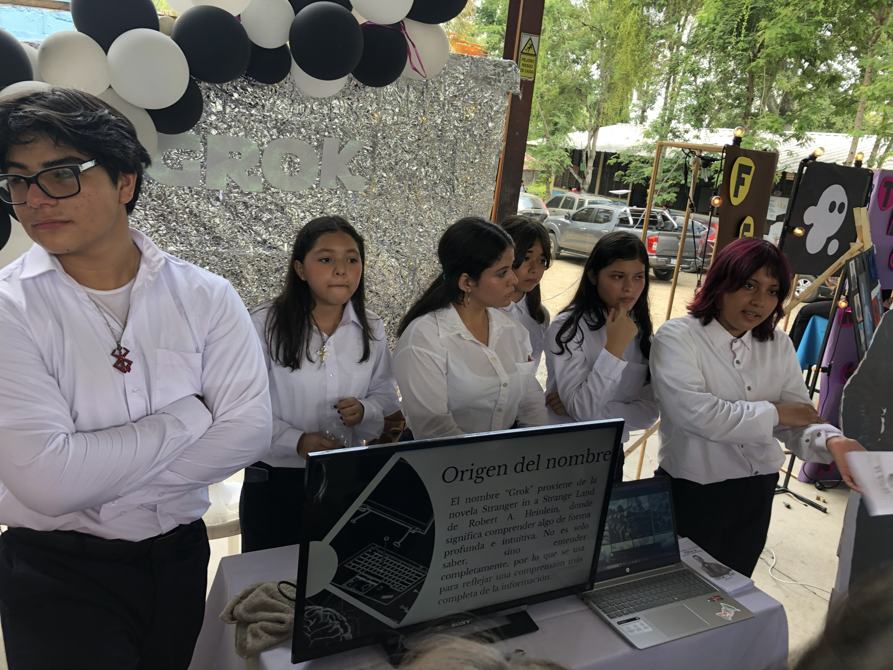

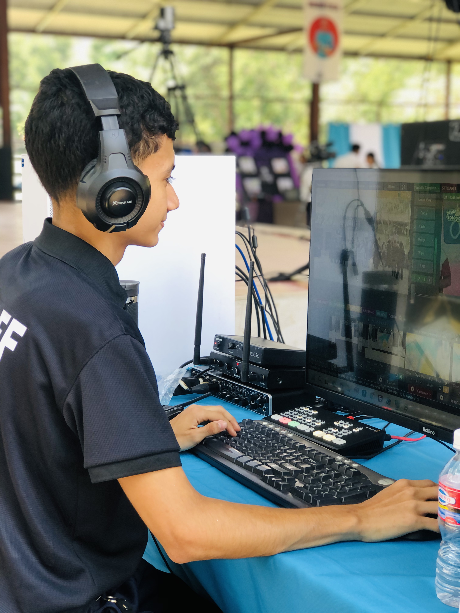
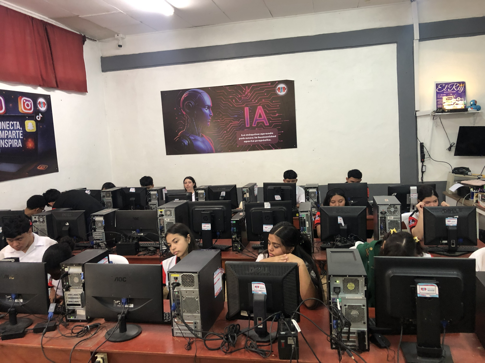
Aprender haciendo
Talleres que despiertan habilidades reales
Las orientaciones técnicas permiten explorar áreas prácticas desde el III Ciclo: estructuras metálicas, electricidad y corte y confección. Esta base ayuda al estudiante a descubrir intereses vocacionales antes de elegir su siguiente etapa.
Estructuras Metálicas
Electricidad
Corte y Confección
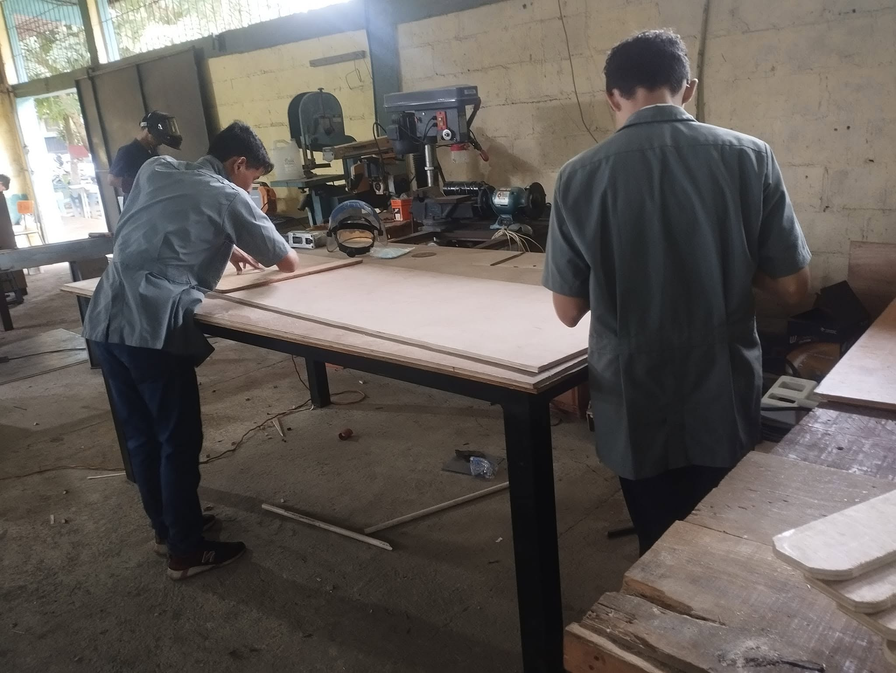


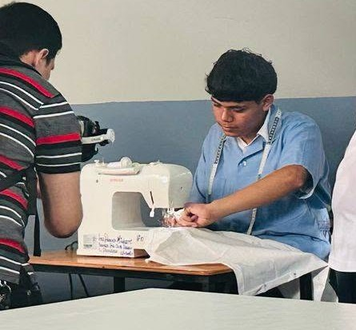
Haz clic para ver más fotos
Matrícula abierta 2026
Requisitos claros para primer ingreso y reingreso
La atención se realiza de lunes a viernes, de 8:00 AM a 12:00 PM, durante el mes de enero de 2026.
Primer ingreso
- Partida de nacimiento original
- Copia de partida de nacimiento
- Copia de identidad del padre o encargado
- Documentación llena del proceso de matrícula
- 2 fotografías tamaño carnet
El instituto en video
Conoce el instituto de cerca
Videos institucionales, recorridos por las instalaciones y momentos de la vida estudiantil.
Video de presentación
del instituto
Agrega: data-video="ruta/video.mp4"
del instituto
Agrega: data-video="ruta/video.mp4"
0:00 / 0:00
Video de actividades
0:00 / 0:00
Video deportivo
0:00 / 0:00
Ruta estudiantil
Del III Ciclo a la educación media
La organización académica facilita que el estudiante avance de forma ordenada desde séptimo grado hasta su bachillerato.
Ingreso a III Ciclo
Séptimo, octavo y noveno grado en modalidad básica o con orientación técnica.
Exploración de habilidades
Participación en actividades académicas, cívicas, deportivas y talleres.
Elección de bachillerato
Informática, Contaduría y Finanzas, o Ciencias y Humanidades.
Vida institucional
Galería del instituto
Momentos, eventos, talleres y celebraciones que reflejan la identidad del Instituto Roberto Micheletti Baín.
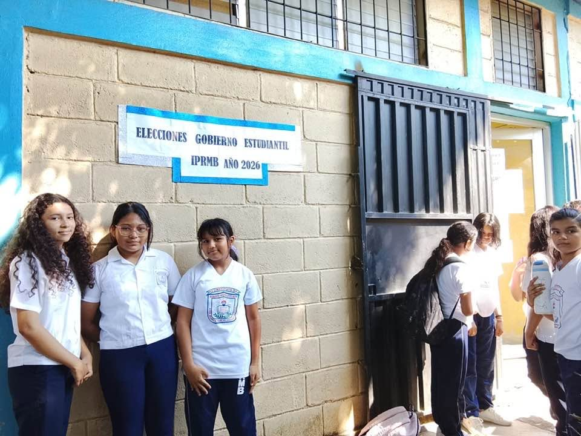


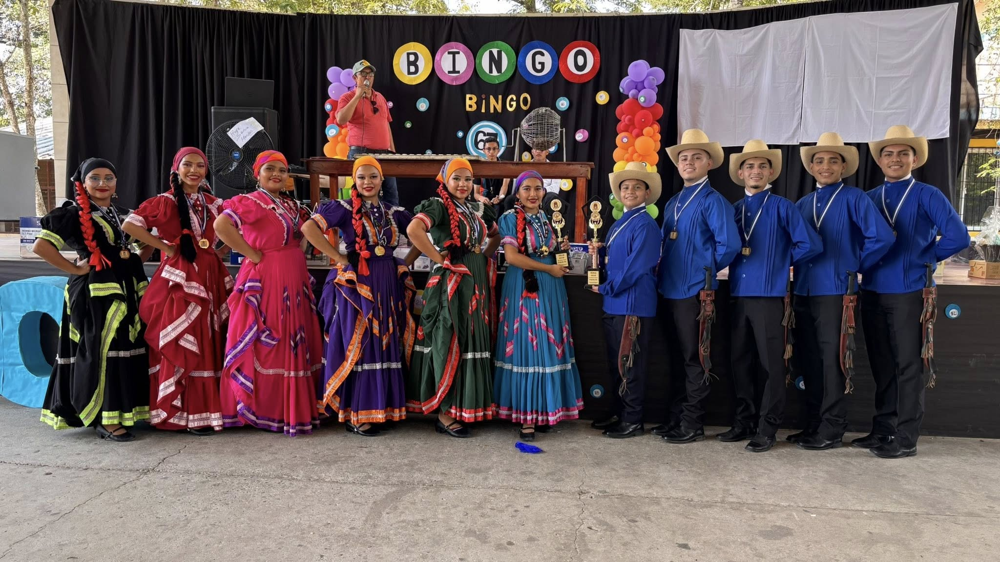

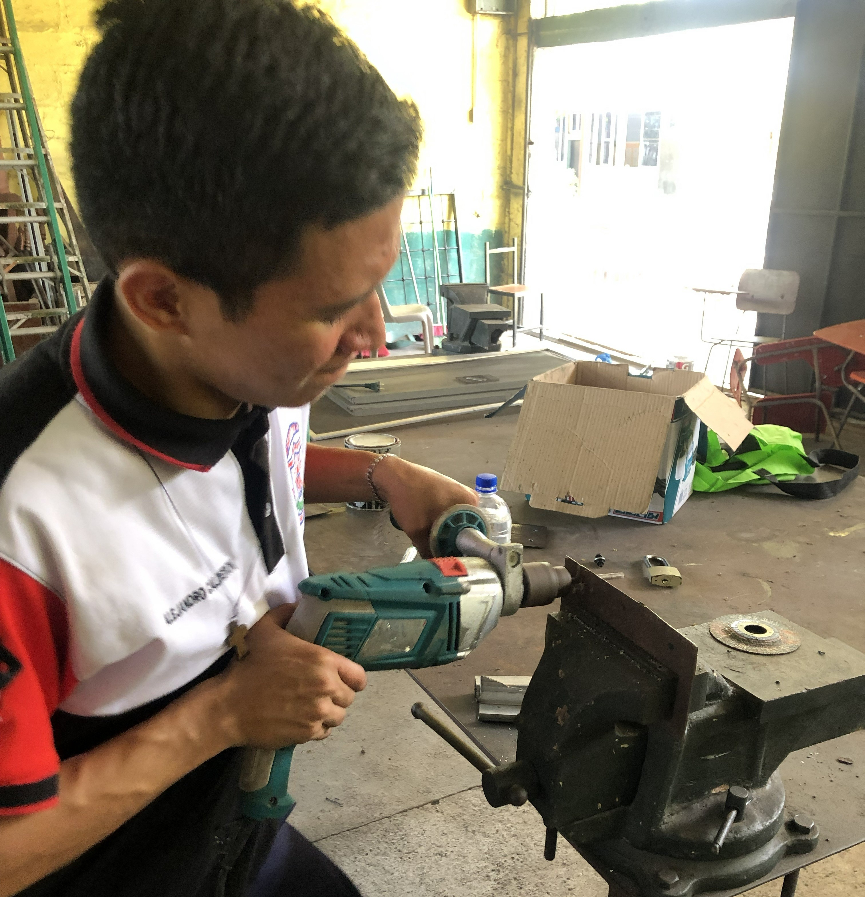

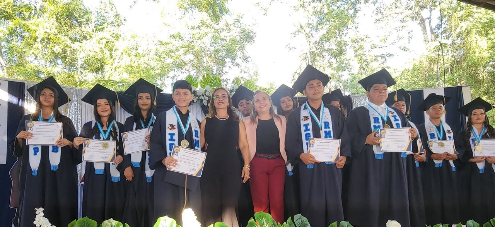
Vida escolar
Eventos y actividades del instituto
Este sitio funciona como espacio de promoción para compartir actividades académicas, culturales, cívicas, deportivas y técnicas del instituto.
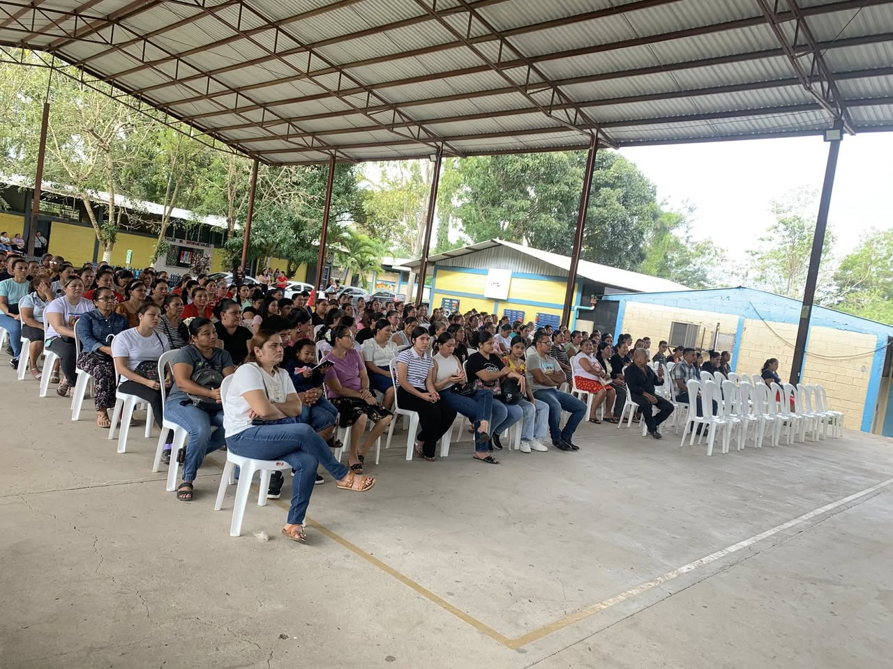


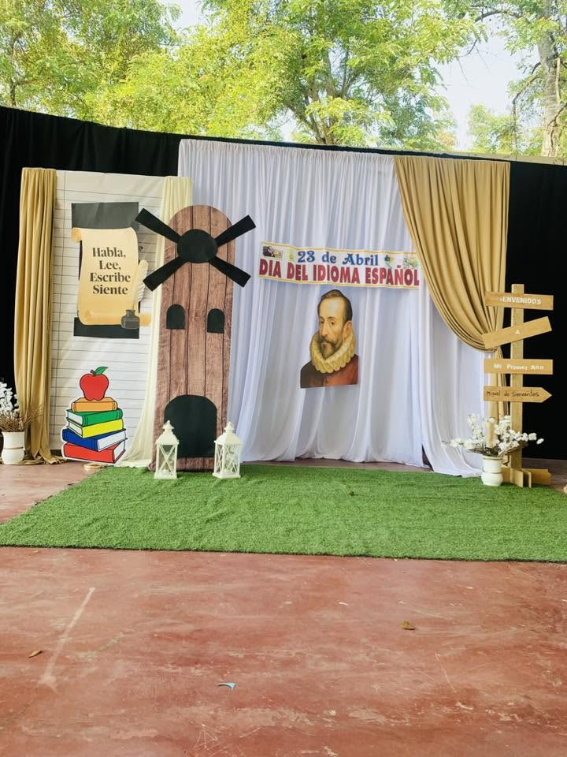
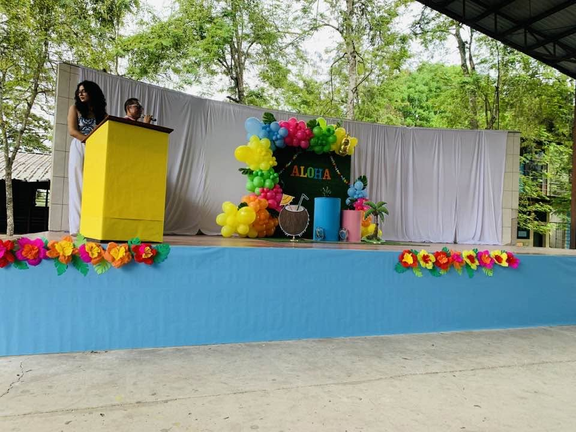
Haz clic para ver más fotos